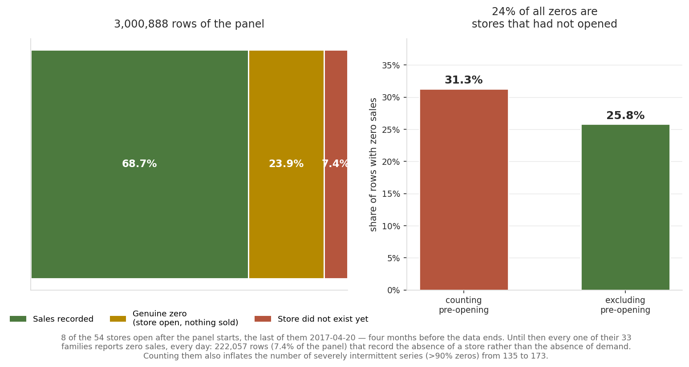
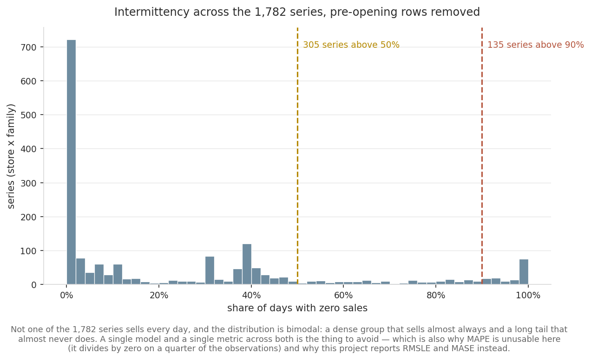
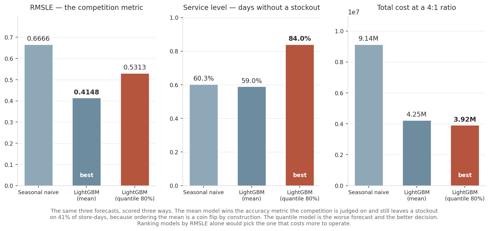
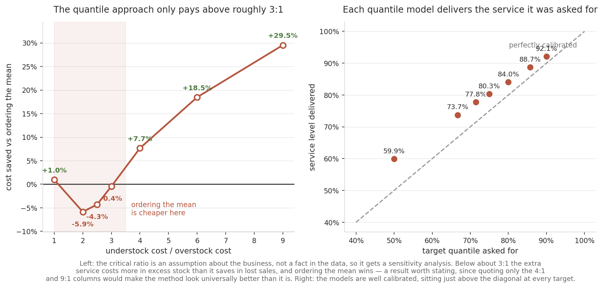

Retail demand forecasting, scored as an inventory decision
A forecasting pipeline on 3,000,888 rows of real grocery sales, built around
a question the competition metric does not answer: does this forecast lead to a better
purchase order? Measured here, the two questions pick different models — the best RMSLE
leaves a stockout on 41% of store-days.
Data: Corporación Favorita (Ecuador), 54 stores × 33 product families,
2013-01-01 to 2017-08-15, downloaded 2026-10-02 via the Kaggle API. Competition rules apply;
the raw data is not redistributed. Granular retail demand is not public anywhere, so the choice
was real demand from a comparable South American grocery chain or invented demand with a local
label — this project takes the real data and says where it is from.
1.A quarter of the “zero demand” is not demand
The panel is 31.3% zeros, which reads as severe intermittency and sends you looking for Croston
or a zero-inflated model. That number is wrong, and the reason is not in the schema.

Eight of the 54 stores open after the panel begins — the last on 2017-04-20, four months before
the data ends. The panel is padded, not truncated: until a store opens, all 33 of its families
report zero every day.
222,057 rows — 7.4% of the panel and 23.6% of every zero in the dataset — record
the absence of a store rather than the absence of demand. The real zero rate is 25.8%,
not 31.3%, and the count of severely intermittent series drops from 173 to 135.
A model trained on those rows learns “this store does not sell” about a store that had not opened,
and a metric computed over them collects credit for predicting zero where there was nothing to
predict. The pipeline flags them rather than dropping them silently, so both versions of each
number stay visible.

Even after the correction, not one of the 1,782 series sells every day. The distribution is
bimodal — which is also why MAPE is absent from this project: it divides by the actual value,
zero on a quarter of the observations.
2.The forecast that wins the metric loses the decision
The competition scores RMSLE on a point forecast. But nobody orders the mean. A buyer orders a
quantity, and being short (lost sale) does not cost the same as being long (excess stock,
markdown, tied-up capital). That is a newsvendor problem, and its answer is not the mean but a
quantile set by the cost ratio, Cu / (Cu + Co).

The same three forecasts, scored three ways. “Best” moves between panels.
Model
RMSLE ↓
MASE ↓
Service ↑
Fill rate ↑
Total cost ↓
Seasonal naive
0.6666
1.762
60.3%
87.8%
9.14M
LightGBM (mean)
0.4148
0.811
59.0%
94.3%
4.25M
LightGBM (quantile 80%)
0.5313
1.177
84.0%
97.3%
3.92M
The mean model’s service level is 59.0% — below the seasonal naive’s 60.3%, despite
being dramatically more accurate. Ordering the conditional mean leaves you short roughly half the
time by construction, however good the mean estimate is. Accuracy improved; the decision did not.
3.And it does not hold at every cost ratio
The critical ratio is an assumption about the business. If the conclusion flips under a plausible
alternative, quoting only the favourable column is how a portfolio project becomes misleading.

Left: below roughly 3:1 the extra service costs more in excess stock than it saves in lost sales,
and ordering the mean wins. Right: delivered service tracks the requested quantile at every level.
Cost ratio
Critical quantile
Quantile cost
Mean cost
Saving
1:1
50%
1.93M
1.95M
+1.0%
2:1
67%
2.88M
2.72M
−5.9%
3:1
75%
3.50M
3.48M
−0.4%
4:1
80%
3.92M
4.25M
+7.7%
6:1
86%
4.71M
5.77M
+18.5%
9:1
90%
5.68M
8.07M
+29.5%
4.Method, in brief
Split by date, never at random. The last 16 days held out — the horizon the
competition asks for, so the backtest measures the stated problem.
Every feature available at decision time. Lags and rolling statistics are
shifted inside each store × family series, so no series borrows another’s history
and nothing peeks ahead.
Payday features. Ecuador, like Chile, pays salaries on the 15th and the last
working day, and grocery demand follows it.
Oil forward-filled, not interpolated. The price that matters for a Sunday is
Friday’s — an interpolated value would be a look-ahead leak that never shows up as a failure.
The 2016 earthquake is flagged, not removed. A model that does not know it
happened learns it as April seasonality and repeats it every year.
Single-period newsvendor. No inventory carried between days, so today’s excess
does not cushion tomorrow’s shortage. Both cost columns would fall under a carry model; the
asymmetry between the two errors, which is the point, survives.
The cost ratio is assumed, not measured. Favorita publishes no margin or
holding cost. Section 3 is the mitigation, and it shows the conclusion is ratio-dependent.
No hierarchical reconciliation. Store × family forecasts are not constrained
to sum to store or national totals.
Ecuador, not Chile. The seasonality that transfers is explicit in the features;
the demand levels do not transfer and are not claimed to.
One split, 16 days. A rolling-origin backtest would put an error bar on these
comparisons. This one does not, so the differences above carry no confidence interval.